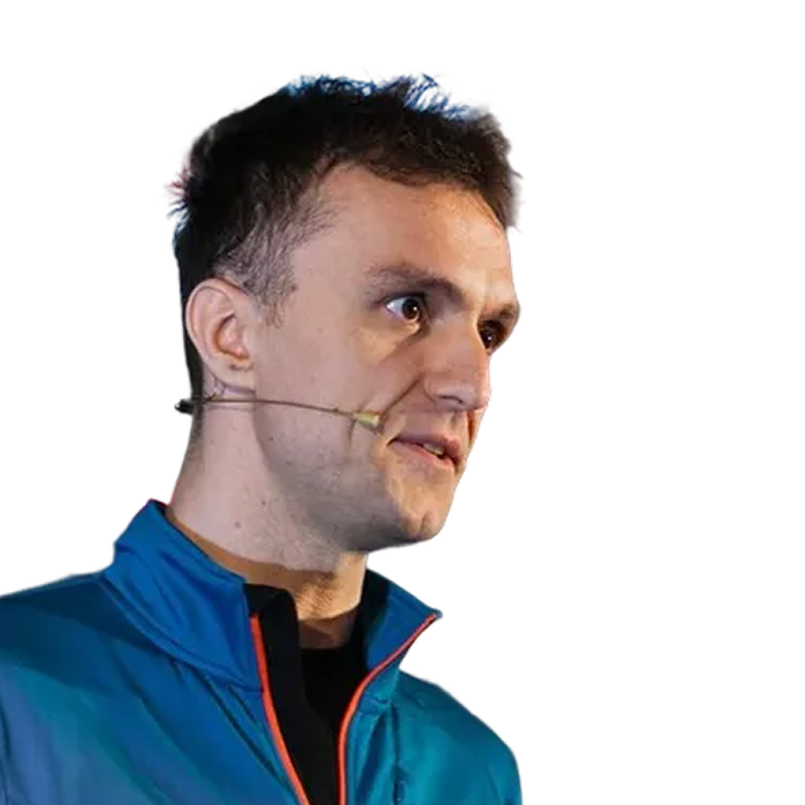

Bogdan Zaharia
TypeScript Developer @ Hootsuite
Typescript developer. Interested in architecture, or “how to write code that doesn’t make you think too much”.
The power of managed effects
May 15 - 11:45h
Side effects are often the root of complexity, making our code difficult to test and reason about. But what if we could treat those effects as data? Enter managed effects: a functional programming concept that is gaining serious traction in the JS ecosystem. This session will cover the fundamentals of managed effects, how to implement them in your projects, and the “superpowers” they grant you when it comes to debugging and testing.